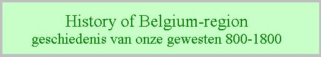
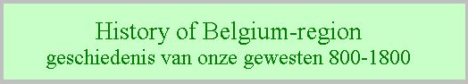
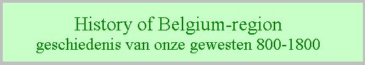
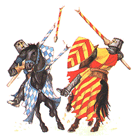
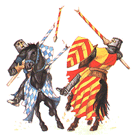
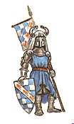
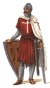
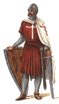

 

antwerpen:

De ruienstad, in L.Van Caukercken, Het begin van de oude Borght nu onse Stadt Antwerpen..., ca 1700, tekening op perkament 38x30cm, Stadsarchief Antwerpen. (bron: Na-kaarten over Antwerpen, Guido De Brabander)
detail: noordelijk stuk van het onderstaand plan

Vogelvluchtkaart van Antwerpen vanuit het Westen, tussen 1524 en 1528, anonieme kopergravure, 33x90cm, 2 platen samengevoegd, uit het Rijksprentenkabinet van het Rijksmuseum, Amsterdam. (toegeschreven aan Gerard Horenbout, Gent ca 1465-Gent of Londen 1540-1541?)
Dit is de oudst bekende plattegrond van Antwerpen, waarop een gedetailleerd beeld te zien is van de oude omheiningsmuur die vanaf 1542 gesloopt werd, om plaats te maken voor de nieuwe omwalling.
Hieronymus Cock, 1557, kopergravure, zicht op Antwerpen vanuit het Oosten, Stadsarchief Antwerpen

Antverpiae Civitatis Belgicae Toto Orbe, ca 1557, gravure naar H.Cock (50x34.5cm) Stadsarchief Antwerpen. Dit is een van de oudste plattegronden van Antwerpen, wat o.m. blijkt uit het oude stadhuis aan de zuidzijde van de Grote Markt.
Dit is de eerste gedateerde plattegrond in vogelvlucht van Antwerpen, waarop de stad vanuit het oosten wordt afgebeeld. De nieuwe omwalling van de Italiaanse krijgsbouwkundige Donato Buoni di Pellezuolli is goed te zien, alsook de zogenaamde Nieuwstad, aangehecht in 1542 en geürbaniseerd door Gilbert van Schoonbeke in 1549 en volgende.
Plattegrond Antwerpen in vogelvlucht, naar het bovenstaande plan van Hieronymus Cock, 1557 (bewerkt door Wim Strecker)
Plan van Virgilius Bononiensis,1565, Museum Plantin Moretus, Antwerpen. houtsnede 120x265cm, 20 bladen
De volgende belangrijke verandering in het stadsbeeld gebeurt in 1567 als de hertog van Alva aan de zuidzijde van de omwalling een citadel laat bouwen. Deze dwangburcht had de vorm van een pentagon met zijden van ong. 300m.


Plan van Antwerpen, gezien van de oostzijde, Pauwels van Overbeke, 1566-1568, houtsnede 28.3x47.5, Antwerpen Stedelijk Prentenkabinet, het bovenste is van 1566 voordat de citadel gebouwd werd en toen de citadel er stond maakte Pauwels van Overbeke een afbeelding van het nieuwe deel dat naast en op het oorspronkelijke plan kon gekleefd worden, met het onderste plan als resultaat.
Ook het hogervermelde plan van Hieronymus Cock uit 1557 werd op dezelfde manier aangepast om de nieuwe citadel er bij te zetten.
Hieronymus Cock, 1557, kopergravure, zicht op Antwerpen vanuit het Oosten, met opgekleefd blad met de nieuwe citadel.
plan van Braun & Hogenberg "Antverpia", vogelperspectief vanuit het zuiden, kopergravure, 34x47.5cm , uit "Civitas Orbis Terrarum", Keulen 1572-1618
Deze kaart, gemaakt kort na de val van Antwerpen, kende een lange carrière: ze werd nog gebruikt door J.Janssonius (1657) en J.Blaeu (1649).

Antverpia, vogelvluchtkaart door J.Hoefnagel, ca 1598 (77x45cm), Antwerpen Stadsarchief
Deze kaart uit één van de mooiste stadsatlassen uit de glorieperiode van de Amsterdamse cartografie, toont de bootbrug van de Werf naar de Linkeroever, het symbool voor de afsluiting van de Schelde.

Antverpia, Gallis Anvers, Vernacule Antwerpen, in J.Blaeu, oc (53x42cm), Antwerpen, Ruusbroecgenootschap
"markgraafschap" antwerpen:
Deze kaart uit het begin van de zeventiende eeuw toont zowel het beeld van de stad als van de vrijheid. Het stadspatroon wijkt nauwelijks af van dat tijdens het laatste kwart van de voorgaande eeuw, omdat de bevolkingsdruk door de uitwijking weggevallen was. (uit Guido De Brabander, "Na-kaarten over Antwerpen")

Marchionatus Sacri Romani Imperii, in P.Keerius, La Germanie Inférieure, 1617 (49x38cm) Antwerpen Ufsia bibliotheek
nederlanden:

 




 

webmaster: Johan Andriessen
Wilrijk Belgium
©2019


{kind=link}
{kind=link}
{kind=link}
{kind=link}
{kind=link}
{kind=link}